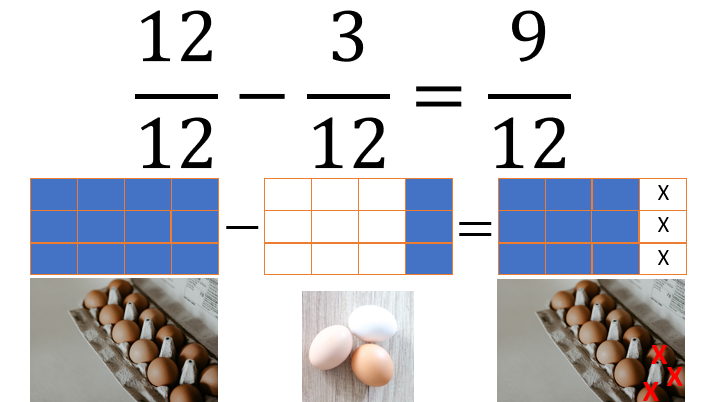
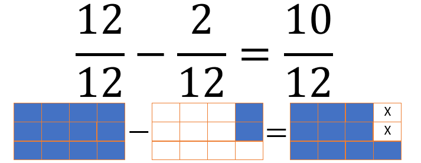

Extend Yourself - PowerPoint: Show and Tell Fractions
 PowerPoint: Transitions and Animations
PowerPoint: Transitions and Animations
Animation in PowerPoint is a way to add movement to objects on a slide. You can use animation to make text or objects appear, disappear, or move around on the slide. Objects can also grow, shrink, or change color. A slide transition is the animation that happens when you go from one slide to the next in a presentation.
Explore how to add transitions and animations to your PowerPoint presentation. Microsoft has tutorials to help you do what you need. You can search for “Add Transitions,” for example, in the search bar at the top (to the right of the light bulb icon and labeled “Tell me what you want to do”). You can also use these links:

- Add, change, or remove transitions between slides
- Notice that you can choose your operating system and PowerPoint version below the slideshow presentation.
- Animate text or objects
Same Equation, New Problem
Create a new word problem using the same equation. Create a new modified PowerPoint to accompany the new problem. For example, instead of having a collection of rocks, Sherry could have a carton of eggs.

Same Problem, New Equation
Modify the word problem using the same general problem but with new numbers. Create a new modified PowerPoint for the new word problem. For example, instead of giving away 3 rocks, Sherry could have given away only 2 of the 12. Or instead of starting with 12 rocks, she could have started with 10.
